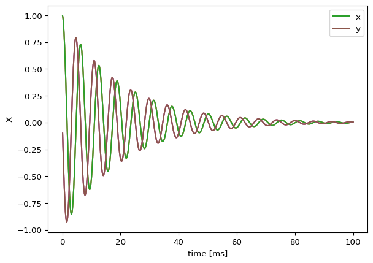

Code
import json
from tvbo.export.experiment import SimulationExperiment
from IPython.display import MarkdownExporting TVBO simulations to OpenMINDS JSON-LD
TVBO provides bidirectional interoperability with OpenMINDS, enabling:
The most readable way to define an experiment is using pure YAML with SimulationExperiment.from_string():
import json
from tvbo.export.experiment import SimulationExperiment
from IPython.display import Markdownyaml_definition = """
id: 1
label: Three-Node Oscillator Network
description: >
A simple 3-node network simulation using a damped harmonic oscillator model.
Demonstrates round-trip conversion to/from OpenMINDS JSON-LD.
# Custom oscillator model (avoids ontology lookup)
local_dynamics:
name: TEST_Oscillator
label: Damped Harmonic Oscillator
description: Simple 2D oscillator for testing
system_type: continuous
state_variables:
x:
name: x
label: Position
equation:
lhs: d(x)/dt
rhs: y
domain: {lo: -10.0, hi: 10.0}
variable_of_interest: true
initial_value: 1.0
y:
name: y
label: Velocity
equation:
lhs: d(y)/dt
rhs: -omega**2 * x - gamma * y + k * c_in
coupling_variable: true
initial_value: 0.0
parameters:
omega:
name: omega
label: Angular frequency
value: 1.0
unit: rad/s
gamma:
name: gamma
label: Damping coefficient
value: 0.1
k:
name: k
label: Coupling strength
value: 0.05
coupling_terms:
c_in:
# 3-node network with connectivity
network:
number_of_nodes: 3
nodes:
- id: 0
label: Region_A
- id: 1
label: Region_B
- id: 2
label: Region_C
edges:
- source: 0
target: 1
parameters:
weight: {value: 0.5}
- source: 1
target: 0
parameters:
weight: {value: 0.5}
- source: 1
target: 2
parameters:
weight: {value: 0.3}
- source: 2
target: 1
parameters:
weight: {value: 0.3}
- source: 0
target: 2
parameters:
weight: {value: 0.2}
- source: 2
target: 0
parameters:
weight: {value: 0.2}
# Integration settings
integration:
method: heun
step_size: 0.1
duration: 100.0
time_scale: s
# Coupling function
coupling:
name: Linear
label: Linear Diffusive Coupling
"""
# Step 1: Create experiment from YAML string
experiment = SimulationExperiment.from_string(yaml_definition)
Markdown(experiment.generate_report())A simple 3-node network simulation using a damped harmonic oscillator model. Demonstrates round-trip conversion to/from OpenMINDS JSON-LD.
Simple 2D oscillator for testing. The model comprises 2 state variables representing neural population activity.
\[\frac{dx}{dt} = y\]
\[\frac{dy}{dt} = c_{in} \cdot k - \gamma \cdot y - x \cdot \omega^{2}\]
| Parameter | Value | Unit | Description |
|---|---|---|---|
| \(\omega\) | 1.0 | rad/s | None |
| \(\gamma\) | 0.1 | — | None |
| \(k\) | 0.05 | — | None |
Pre-synaptic transformation: \[c_{\text{pre}} = x_{j}\]
Post-synaptic transformation: \[c_{\text{post}} = b + a \cdot gx\]
| Parameter | Value | Description |
|---|---|---|
| \(a\) | 0.00390625 | Linear scaling factor of the coupled (delayed) input. |
| \(b\) | 0.0 | Shifts the base of the connection strength while maintaining the absolute difference between different values. |
Regions: 3
Conduction velocity: 3.0 mm/ms
Method: heun
Time step: \(\Delta t = 0.1\) ms
Duration: 100.0 ms
experiment.run().plot()
# Step 2: Convert to OpenMINDS JSON-LD
jsonld = experiment.to_openminds(base_id="https://example.org/simulations")
print("JSON-LD preview:")
print(json.dumps(jsonld, indent=2, default=str)[:1500])JSON-LD preview:
{
"@context": {
"@vocab": "https://openminds.ebrains.eu/vocab/",
"tvbo": "http://www.thevirtualbrain.org/tvb-o/",
"sands": "https://openminds.ebrains.eu/sands/",
"core": "https://openminds.ebrains.eu/core/",
"computation": "https://openminds.ebrains.eu/computation/"
},
"@type": "tvbo:SimulationExperiment",
"id": 1,
"model": {
"name": "TEST_Oscillator",
"label": "Damped Harmonic Oscillator",
"parameters": {
"omega": {
"@type": "tvbo:Parameter",
"name": "omega",
"label": "Angular frequency",
"value": 1.0,
"description": "None",
"unit": "rad/s",
"explored_values": []
},
"gamma": {
"@type": "tvbo:Parameter",
"name": "gamma",
"label": "Damping coefficient",
"value": 0.1,
"description": "None",
"explored_values": []
},
"k": {
"@type": "tvbo:Parameter",
"name": "k",
"label": "Coupling strength",
"value": 0.05,
"description": "None",
"explored_values": []
}
},
"description": "Simple 2D oscillator for testing",
"references": [],
"coupling_terms": {
"c_in": {
"@type": "tvbo:Parameter",
"name": "c_in",
"explored_values": []
}
},
"state_variables": {
"x": {
"@type": "tvbo:StateVariable",
"name": "x",
"label": "Position",
"domain": {
"lo": "-10.0",
reconstructed = SimulationExperiment.from_openminds(jsonld)
reconstructed.run().plot()
yaml_output = reconstructed.to_yaml()
print(yaml_output[:2000])
print("\n... [truncated]")id: 1
model:
name: TEST_Oscillator
label: Damped Harmonic Oscillator
parameters:
omega:
name: omega
label: Angular frequency
value: 1.0
description: None
unit: rad/s
gamma:
name: gamma
label: Damping coefficient
value: 0.1
description: None
k:
name: k
label: Coupling strength
value: 0.05
description: None
description: Simple 2D oscillator for testing
coupling_terms:
c_in:
name: c_in
state_variables:
x:
name: x
label: Position
domain:
lo: '-10.0'
hi: '10.0'
log_scale: false
description: ''
equation:
lhs: Derivative(x, t)
rhs: y
latex: false
variable_of_interest: true
coupling_variable: false
initial_value: 1.0
y:
name: y
label: Velocity
domain:
lo: 1e-100
hi: 1e+100
log_scale: false
description: ''
equation:
lhs: Derivative(y, t)
rhs: c_in*k - gamma*y - omega**2*x
latex: false
variable_of_interest: true
coupling_variable: true
initial_value: 0.0
number_of_modes: 1
system_type: continuous
description: 'A simple 3-node network simulation using a damped harmonic oscillator
model. Demonstrates round-trip conversion to/from OpenMINDS JSON-LD.
'
label: Three-Node Oscillator Network
local_dynamics:
name: TEST_Oscillator
label: Damped Harmonic Oscillator
parameters:
omega:
name: omega
label: Angular frequency
value: 1.0
description: None
unit: rad/s
gamma:
name: gamma
label: Damping coefficient
value: 0.1
description: None
k:
name: k
label: Coupling strength
value: 0.05
description: None
description: Simple 2D oscillator for testing
coupling_terms:
c_in:
name: c_in
state_variables:
x:
name: x
label: Position
domain:
lo:
... [truncated]